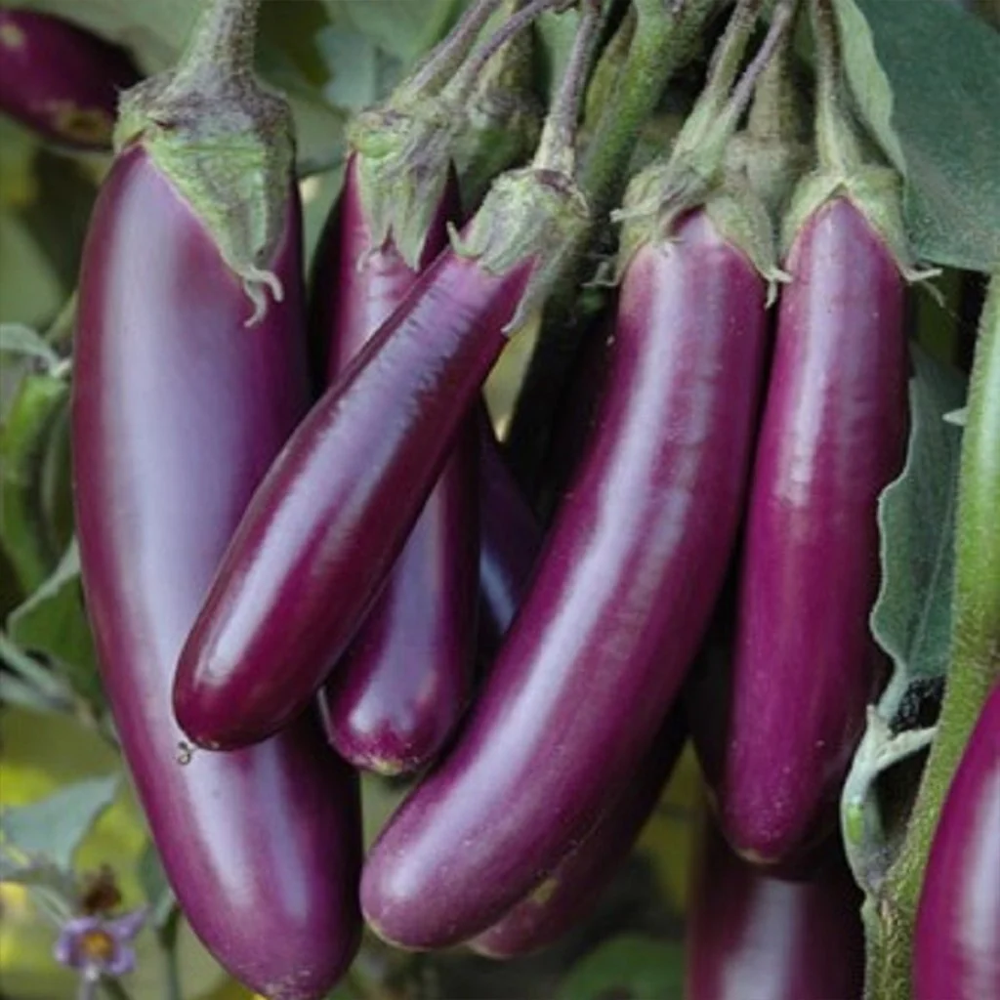
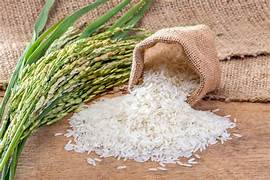
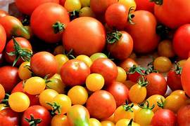
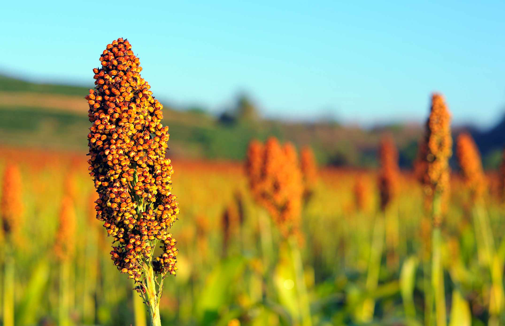

Coriander (Cilantro)

Common Diseases:
- Damping-off: Caused by soilborne fungi (e.g., Pythium, Rhizoctonia).
- Powdery Mildew: Caused by the fungus Erysiphe polygoni.
- Aphids and Leaf Spots: Aphids can cause yellowing and stunted growth.
Organic Solutions:
- For Damping-off: Ensure well-drained soil and avoid overwatering. Use garlic or neem oil spray to suppress fungal growth.
- For Powdery Mildew: Use sulfur-based fungicides or homemade sprays. Ensure good air circulation and avoid overhead watering.
- For Aphids: Use neem oil, insecticidal soap, or introduce beneficial insects like ladybugs.
Brinjal (Eggplant)

Common Diseases:
- Fruit and Shoot Borer: A common pest that damages the fruit and shoots.
- Bacterial Wilt: Caused by Ralstonia solanacearum.
- Phomopsis Blight: A fungal disease causing fruit rot.
Organic Solutions:
- For Fruit and Shoot Borer: Handpick and destroy affected parts. Spray neem oil regularly. Introduce natural predators like Trichogramma wasps.
- For Bacterial Wilt: Use disease-resistant varieties and practice crop rotation. Solarize the soil.
- For Phomopsis Blight: Remove infected fruits and plants. Spray with copper-based fungicides.
Lady's Finger (Okra)

Common Diseases:
- Yellow Vein Mosaic Virus (YVMV): Transmitted by whiteflies.
- Powdery Mildew: Caused by Erysiphe cichoracearum.
- Root-Knot Nematodes: These nematodes attack the roots, causing stunted growth.
Organic Solutions:
- For Yellow Vein Mosaic Virus: Control whitefly populations with neem oil or insecticidal soap. Use disease-resistant varieties.
- For Powdery Mildew: Spray a mixture of baking soda and water. Use sulfur-based organic fungicides.
- For Root-Knot Nematodes: Rotate crops to non-host plants. Apply neem cake to the soil, which is a natural nematicide.
Rice

Common Diseases:
- Blast Disease: Caused by the fungus Magnaporthe oryzae.
- Bacterial Leaf Blight (BLB): Caused by Xanthomonas oryzae.
- Brown Spot: Caused by Bipolaris oryzae.
Organic Solutions:
- For Blast Disease: Use resistant varieties and practice proper water management. Apply neem oil or compost tea as a preventive spray.
- For Bacterial Leaf Blight: Use copper-based organic fungicides. Plant in well-drained soil and avoid excessive nitrogen fertilization.
- For Brown Spot: Apply organic compost and use balanced fertilizer applications. Spray with neem or sesame oil.
Corn (Maize)

Common Diseases:
- Corn Smut: Caused by Ustilago maydis.
- Northern Corn Leaf Blight: Caused by Exserohilum turcicum.
- Corn Earworm: A pest that damages ears of corn.
Organic Solutions:
- For Corn Smut: Remove infected parts early. Enhance soil health with organic compost and avoid injury to plants.
- For Northern Corn Leaf Blight: Rotate crops and select resistant varieties. Apply sulfur-based fungicides.
- For Corn Earworm: Handpick the worms or use Bacillus thuringiensis (Bt), a biological pesticide. Neem oil can also be used.
Potato

Common Diseases:
- Late Blight: Caused by Phytophthora infestans.
- Early Blight: Caused by Alternaria solani.
- Potato Cyst Nematodes: These nematodes attack the roots.
Organic Solutions:
- For Late Blight: Use resistant varieties and ensure proper air circulation. Apply a mixture of milk and water or neem oil.
- For Early Blight: Rotate crops and remove infected leaves. Apply organic fungicides or copper-based solutions.
- For Potato Cyst Nematodes: Use resistant varieties and practice crop rotation. Solarize the soil to reduce nematode populations.
Tomato

Common Diseases:
- Early Blight: Caused by Alternaria solani.
- Late Blight: Caused by Phytophthora infestans.
- Tomato Mosaic Virus: Transmitted by aphids.
Organic Solutions:
- For Early Blight: Use resistant varieties and apply organic fungicides. Remove affected leaves promptly.
- For Late Blight: Use copper-based fungicides and ensure good air circulation around plants.
- For Tomato Mosaic Virus: Use virus-free seeds and control aphid populations with neem oil or insecticidal soap.
Pumpkin

Common Diseases:
- Powdery Mildew: Caused by Podosphaera xanthii.
- Downy Mildew: Caused by Pseudoperonospora cubensis.
- Squash Bugs: Pests that can damage leaves and fruits.
Organic Solutions:
- For Powdery Mildew: Apply sulfur-based fungicides or a mixture of milk and water. Ensure good airflow around plants.
- For Downy Mildew: Use organic fungicides and practice crop rotation. Avoid overhead watering.
- For Squash Bugs: Handpick and destroy pests or use neem oil. Introduce beneficial insects like spiders and beetles.
Cucumber

Common Diseases:
- Downy Mildew: Caused by Pseudoperonospora cubensis.
- Powdery Mildew: Caused by Sphaerotheca fuliginea.
- Cucumber Beetles: Pests that can transmit diseases and damage plants.
Organic Solutions:
- For Downy Mildew: Apply copper-based fungicides and ensure good air circulation. Avoid wetting foliage.
- For Powdery Mildew: Use sulfur-based fungicides or a mixture of baking soda and water. Maintain proper spacing between plants.
- For Cucumber Beetles: Use row covers or neem oil. Introduce beneficial insects like ladybugs.
Groundnut (Peanut)

Common Diseases:
- Aflatoxin Contamination: Caused by Aspergillus flavus and Aspergillus parasiticus.
- Early Leaf Spot: Caused by Cercospora arachidicola.
- Late Leaf Spot: Caused by Cercosporidium personatum.
Organic Solutions:
- For Aflatoxin Contamination: Practice proper drying and storage. Use organic fungicides like neem oil.
- For Early Leaf Spot: Use resistant varieties and apply copper-based fungicides.
- For Late Leaf Spot: Apply organic fungicides and ensure good air circulation around plants.
Cotton

Common Diseases:
- Bollworm: Caused by Helicoverpa armigera.
- Verticillium Wilt: Caused by Verticillium dahliae.
- Alternaria Leaf Spot: Caused by Alternaria spp.
Organic Solutions:
- For Bollworm: Use pheromone traps and neem oil sprays. Introduce natural predators like Trichogramma wasps.
- For Verticillium Wilt: Practice crop rotation and use resistant varieties. Solarize the soil.
- For Alternaria Leaf Spot: Apply copper-based fungicides and remove infected leaves.
Sorghum

Common Diseases:
- Head Smut: Caused by Sphacelotheca sorghi.
- Anthracnose: Caused by Colletotrichum sublineola.
- Downy Mildew: Caused by Peronosclerospora sorghi.
Organic Solutions:
- For Head Smut: Use resistant varieties and practice crop rotation.
- For Anthracnose: Apply organic fungicides and remove infected plant debris.
- For Downy Mildew: Use copper-based fungicides and ensure proper spacing between plants.
Barnyard Millet

Common Diseases:
- Blight: Caused by various fungi, including Alternaria and Fusarium.
- Powdery Mildew: Caused by Erysiphe graminis.
- Rust: Caused by Puccinia spp.
Organic Solutions:
- For Blight: Apply organic fungicides and rotate crops.
- For Powdery Mildew: Use sulfur-based fungicides and maintain good air circulation.
- For Rust: Remove and destroy infected plant parts. Apply organic fungicides.
Black Gram (Urad Dal)

Common Diseases:
- Pod Borer: Caused by Helicoverpa armigera.
- Fusarium Wilt: Caused by Fusarium oxysporum.
- Leaf Spot: Caused by various fungi including Alternaria spp.
Organic Solutions:
- For Pod Borer: Use neem oil and handpick the affected pods. Introduce natural predators.
- For Fusarium Wilt: Use disease-resistant varieties and practice crop rotation. Apply organic compost.
- For Leaf Spot: Apply organic fungicides and remove infected leaves.